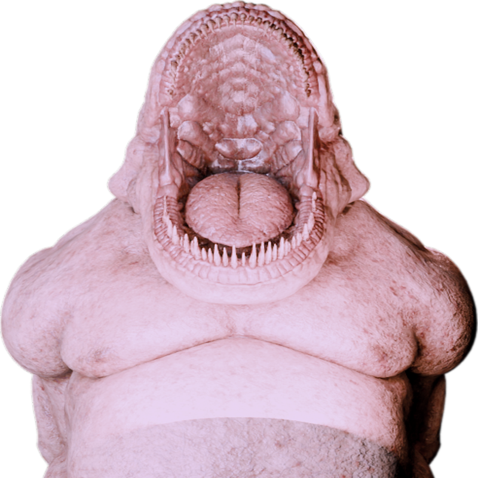
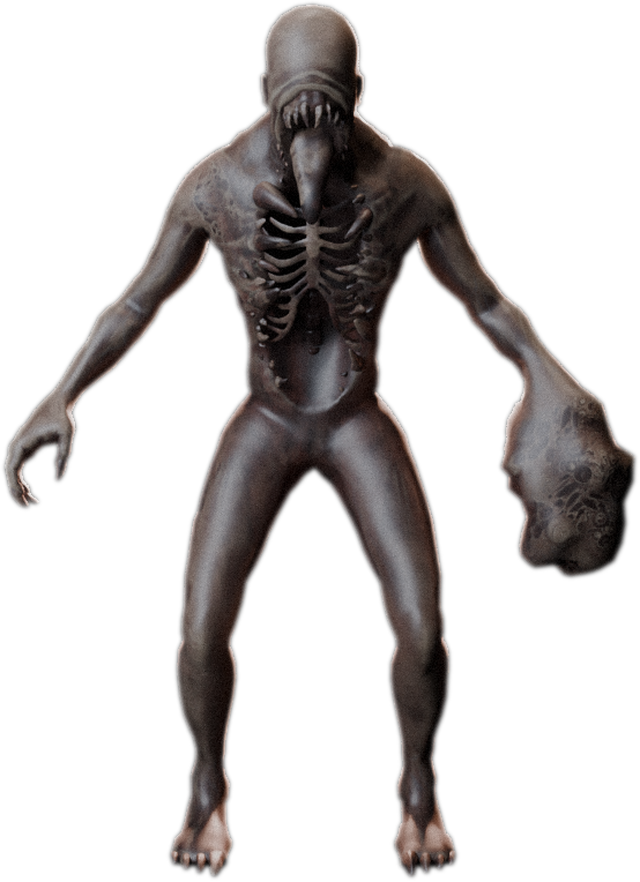

Kamu guru piket di SMA tua itu. Jam sebelas malam, kau harus membukukan sepuluh halaman catatan sebelum pulang.
Sesuatu berdiri di ujung lorong. Ia tidak berjalan — ia sudah di tempat lain.
Kamu punya 8 nyawa. Denyut di dadamu memakan satu nyawa tiap 5 detik.
Jawaban benar mengembalikan satu nyawa — dan memberi 1,2 detik aman.
Suara keras memakan satu nyawa. Batuk, desis, helaan napas.
Berpaling memakan satu nyawa. Wajahmu harus tetap terlihat kamera.
Selesaikan 10 halaman dan kau pulang. Habiskan nyawa dan ia sampai.
Kamera & mikrofon diproses di perangkatmu. Tidak ada yang dikirim keluar.